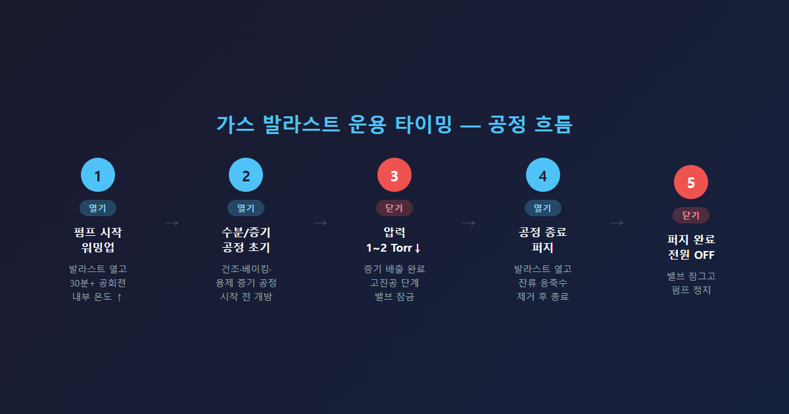

현장에서 에드워드(Edwards) 로터리 베인 펌프를 납품하다 보면, 가스 발라스트 밸브 앞에서 멈추는 분들을 꽤 자주 만납니다. 밸브 위에 0, I, II라고 적혀 있는데 어떻게 써야 하는지 모르겠다고 하시는 경우가 많습니다. 얼마 전 납품 현장에서도 고객사 이사님께서 "N2 유량을 가스 발라스트 유량으로 잘못 기재했다"고 연락이 왔을 정도입니다. 오늘은 현장 경험을 바탕으로, 가스 발라스트를 언제 열고 언제 닫아야 하는지를 정리해 드리겠습니다.
오일 실드 로터리 베인 펌프(오일로 밀폐되는 회전식 펌프)가 기체를 압축하면, 그 안에 섞여 있는 수분이나 용제(솔벤트) 같은 응축성 증기가 액체로 변할 위험이 있습니다. 수분이 오일 안으로 들어가면 에멀젼(물과 기름이 뒤섞인 우유빛 상태)이 만들어지고, 이 상태에서는 오일이 윤활 기능을 잃어버립니다. 심하면 펌프 내부가 굳어버리는 고착(seize) 현상으로 이어지기도 합니다.
가스 발라스트 밸브를 열면, 압축이 시작되기 전에 소량의 건조한 기체(공기 또는 질소)가 챔버 안으로 들어옵니다. 이 기체 덕분에 증기가 액체로 변하기 전에 배기구 밖으로 밀려 나갑니다. 수분이 펌프 안에서 "물이 되기 전에 쫓아내는" 장치입니다.
① 수분이나 증기가 나오는 공정 시작 전
건조 공정, 챔버 베이킹 후 진공 뽑기, 또는 용제 증기가 발생하는 공정이라면 밸브를 열고 시작하는 것이 원칙입니다. 열지 않으면 증기가 오일에 섞여 들어가 서서히 오일을 오염시킵니다.
② 펌프 시작 전 워밍업(예열) 단계
펌프를 처음 켰을 때는 내부 온도가 낮습니다. 가스 발라스트를 열고 30분 이상 공회전을 시켜야 펌프 내부 온도가 100°C 이상으로 올라갑니다. 이 온도가 되어야 오일 안에 남아 있던 수분이 증기 상태로 제대로 배출됩니다. 충분히 워밍업하지 않은 상태에서 공정을 시작하면 수분이 배출되지 않고 오일에 녹아들 수 있습니다.
③ 공정 종료 후 오일 정화(퍼지) 단계
공정이 끝난 뒤 바로 펌프를 끄지 말고, 가스 발라스트를 열어 잠시 더 공회전시켜 오일 안에 남은 응축수를 제거하는 것이 권장됩니다. 이 절차 하나로 오일 오염과 내부 부식을 크게 줄일 수 있습니다.

수분이나 증기가 충분히 배출된 후에는 닫아야 합니다. 기준은 시스템 압력이 1~2 Torr 이하로 내려갔을 때입니다. 밸브를 열어 두면 공기가 계속 챔버로 유입되어 펌프가 도달할 수 있는 최저 압력(ultimate pressure)이 올라가 버립니다. 고진공(high vacuum)이 필요한 시점에는 반드시 닫고 운전해야 합니다.
건조하고 불활성인 기체만 처리하는 공정에서도 발라스트를 열어 둘 이유가 없습니다. 오히려 열어 두면 펌프 온도가 정상보다 10°C 이상 높아져 오일이 과열되거나 열화(burn)될 수 있습니다.
요약하자면 이렇습니다.
| 상황 | 발라스트 |
|---|---|
| 워밍업, 수분/증기 공정 초기 | 열기 (포지션 I 또는 II) |
| 시스템 압력 1~2 Torr 이하 | 닫기 (포지션 0) |
| 고진공 달성 단계 | 닫기 (포지션 0) |
| 공정 종료 후 퍼지 | 열기 → 완료 후 닫고 종료 |
에드워드 RV 시리즈, E2M 시리즈 등의 가스 발라스트 밸브는 세 가지 포지션이 있습니다. 포지션 0은 완전히 닫힌 상태입니다. 포지션 I은 저유량 개방으로 수분이 적당량 있을 때 일반적인 처리에 사용합니다. 포지션 II는 고유량 개방으로 포지션 I의 약 두 배 유량이 유입됩니다. 수분이 많거나 워밍업 초기에 최대 퍼지가 필요할 때 사용하는 포지션입니다.
한 가지 주의할 점은 N2(질소) 가스 발라스트 어댑터입니다. 이 어댑터는 포지션 0(잠금) 상태에서 가운데 구멍으로 질소가 공급됩니다. 납품 현장에서도 이걸 일반 가스 발라스트처럼 포지션 I이나 II로 돌리면 공기까지 유입되어 진공 누설이 발생했습니다.
오일 점검창 확인이 중요합니다. 오일이 뿌옇고 거품이 있다면 에멀젼 상태입니다. 이때는 가스 발라스트를 열고 워밍업을 진행하거나 오일을 교체해야 합니다. 에드워드 RV·E2M 시리즈 권장 오일은 Ultragrade 19입니다.
공정 성격에 맞게 열고 닫는 시점을 익혀 두시면, 불필요한 오버홀이나 조기 교체를 예방할 수 있습니다.
Tel : 031 204 7170
info@smartechvacuum.com
www.smartechvacuum.com